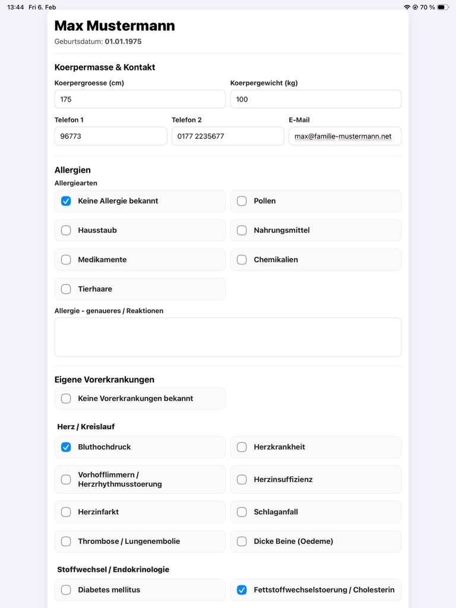
Allgemeine AnamneseVorerkrankungen, Medikamente, Risiken und weitere Angaben strukturiert am Tablet erfassen.
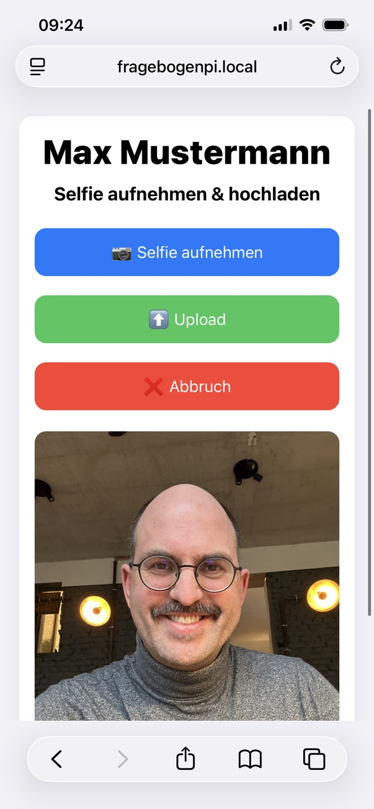
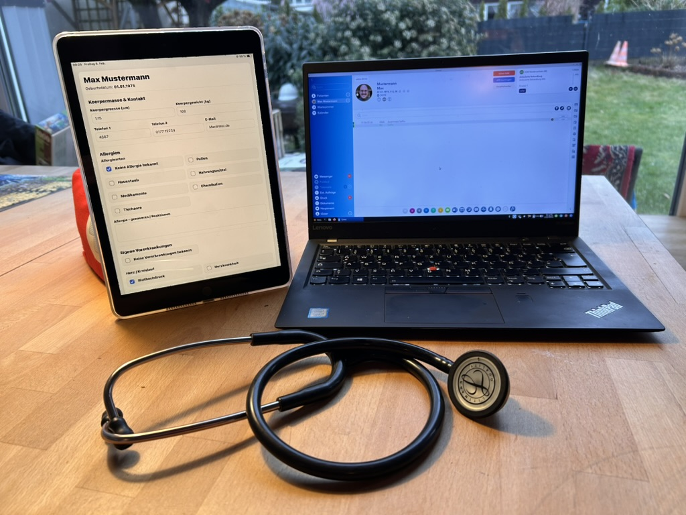
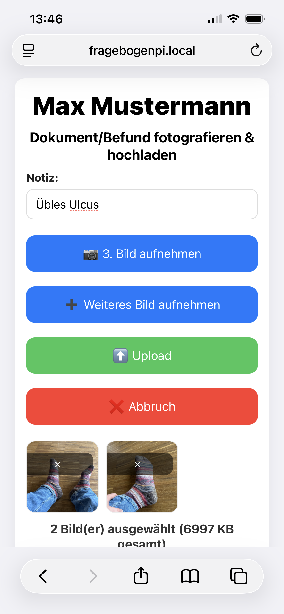
Anamnesebögen, Patientenfotos und Befundbilder mit GDT-Import und Rückschrieb in die Praxissoftware.
Vollständig offline. Vollständig isoliert. Open Source.
wget https://fragebogenpi.de/install.sh chmod +x install.sh sudo bash install.sh
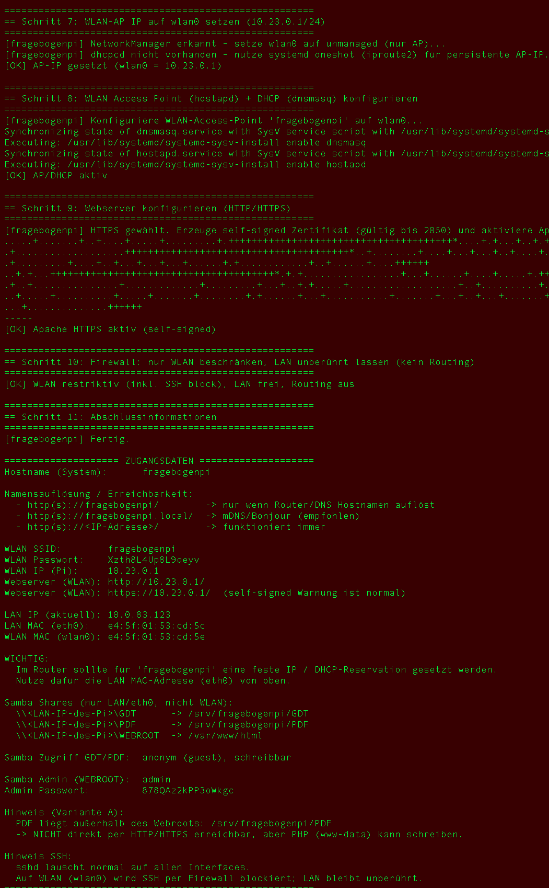

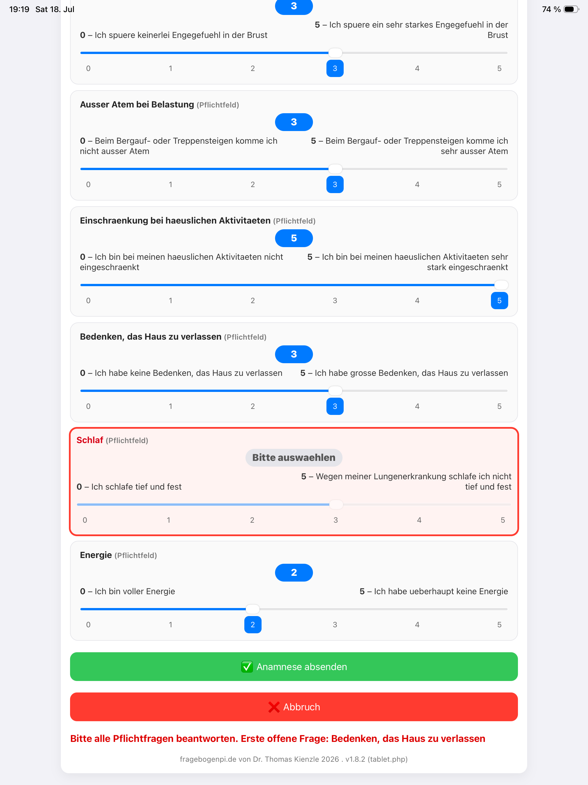
Eine praxistaugliche Auswahl für Anamnese, Verlaufskontrolle, Screening und Dokumentation:
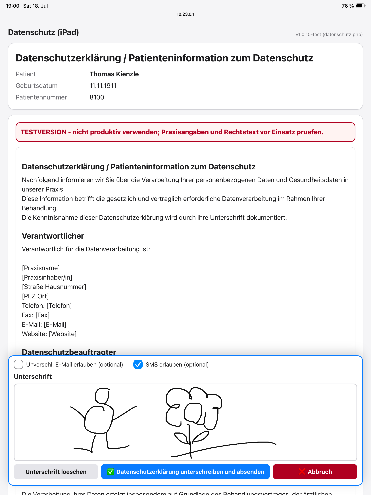
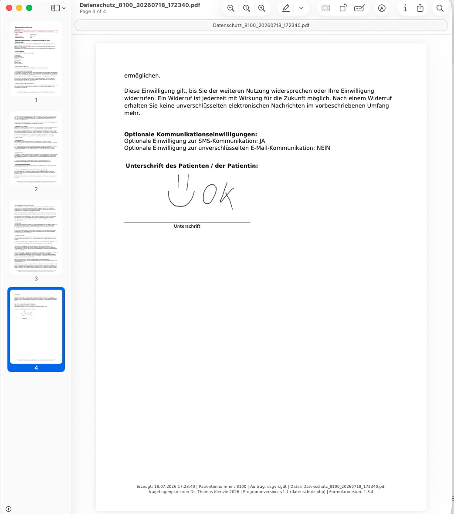
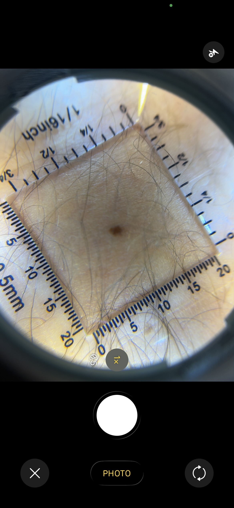
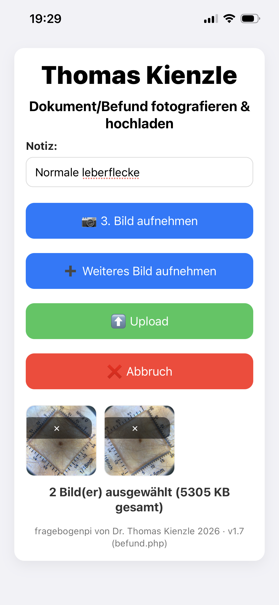
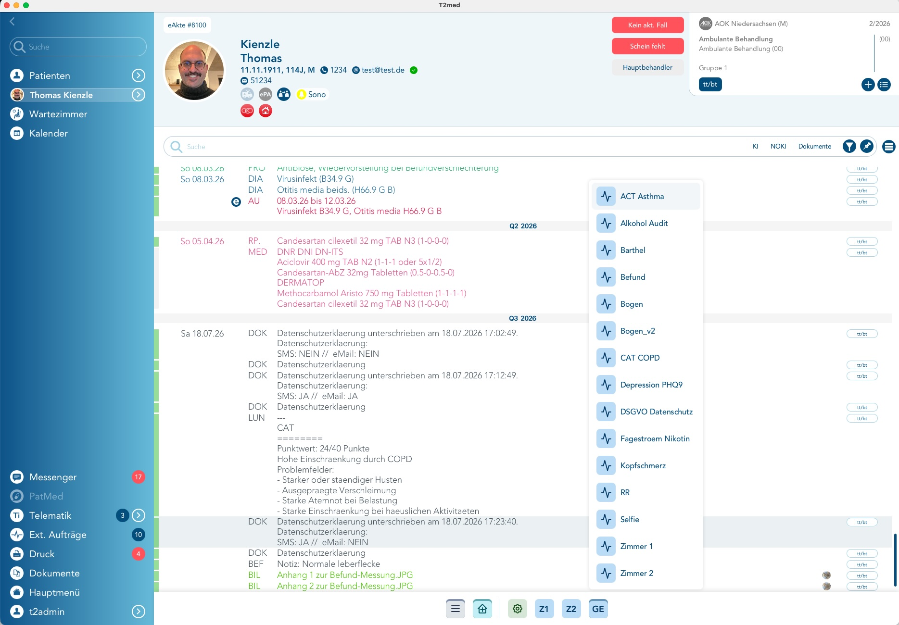
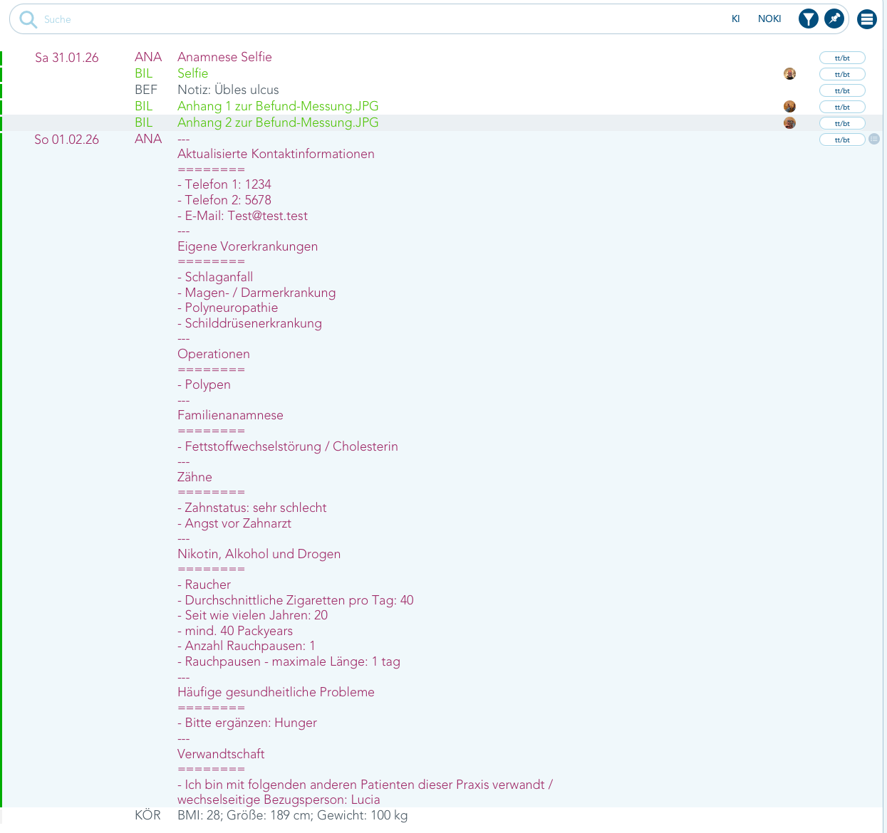